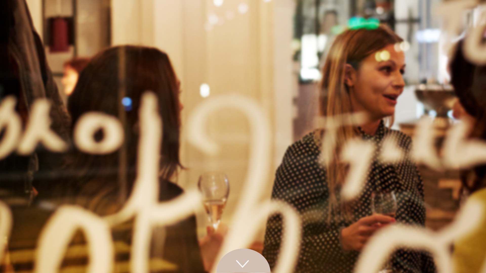
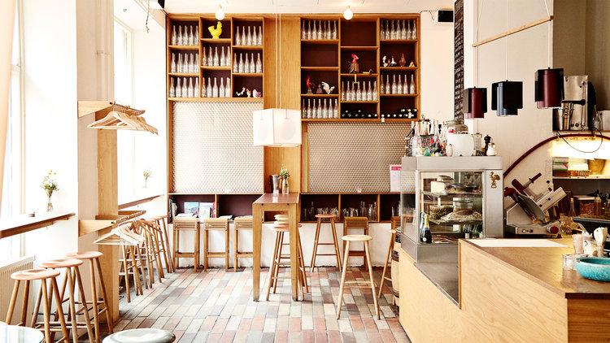

OM OS
Vinhanen - Historie
Vinhanen importerer udvalgte vine direkte fra producenter og
cooperativer fra vinproducerende lande.
Vinen bliver tappet i glas, i vores egne pantflasker eller i 5 liters dunke.
Vinhanen har, siden vi startede på Nørrebro i 2013, haft én mission; at kunne tilbyde kvalitetsvin til en fair pris. Vores grundprincip om at købe vin på bulk, direkte fra vinbønder, før det bliver flasket, har gjort det muligt for os at kunne tilbyde håndlavet kvalitetsvin til overkommelige priser.
Fordelene var for os indlysende. Heldigvis var vores kunder enige og fra første dag var vores vinhandel og vinbar en succés.
Kom forbi vores vinbar på Nørrebro, hvor man kan få fyldt god øko-vin til rimelige priser på en af vores pantflasker, eller slå sig ned og nyde vinen hos os, ledsaget af franske oste og spansk charcuteri samt små varme retter.
Vi sælger ca. 20.000 liter vin pr. år på vores bar.
”Vin til folket” er vores motto; men ud over det, vil vi også gerne vise kunst til folket, og på Vinhanen i Baggesensgade på Nørrebro, har vi fået hjælp fra gode, vinglade kunstnervenner, bl. a. FOS, John Kørner og Bjørn Nørgaard, som har skabt integrerede værker til stedet.
Vinhanens egne pantflasker er udsmykket af bl.a. John Kørner, FOS, Philip Ytournel, Anders Morgenthaler og Fie Norsker.
Vinen bliver tappet i glas, i vores egne pantflasker eller i 5 liters dunke.
Vinhanen har, siden vi startede på Nørrebro i 2013, haft én mission; at kunne tilbyde kvalitetsvin til en fair pris. Vores grundprincip om at købe vin på bulk, direkte fra vinbønder, før det bliver flasket, har gjort det muligt for os at kunne tilbyde håndlavet kvalitetsvin til overkommelige priser.
Fordelene var for os indlysende. Heldigvis var vores kunder enige og fra første dag var vores vinhandel og vinbar en succés.
Kom forbi vores vinbar på Nørrebro, hvor man kan få fyldt god øko-vin til rimelige priser på en af vores pantflasker, eller slå sig ned og nyde vinen hos os, ledsaget af franske oste og spansk charcuteri samt små varme retter.
Vi sælger ca. 20.000 liter vin pr. år på vores bar.
”Vin til folket” er vores motto; men ud over det, vil vi også gerne vise kunst til folket, og på Vinhanen i Baggesensgade på Nørrebro, har vi fået hjælp fra gode, vinglade kunstnervenner, bl. a. FOS, John Kørner og Bjørn Nørgaard, som har skabt integrerede værker til stedet.
Vinhanens egne pantflasker er udsmykket af bl.a. John Kørner, FOS, Philip Ytournel, Anders Morgenthaler og Fie Norsker.


